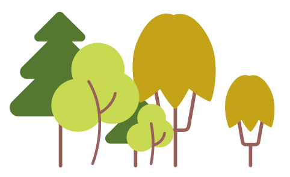
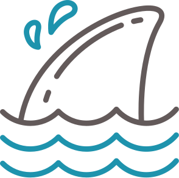
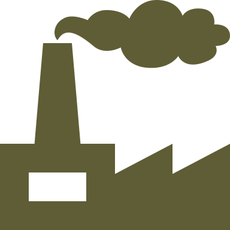
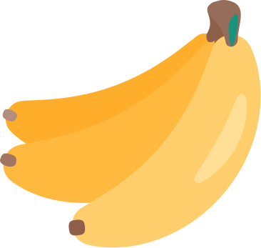
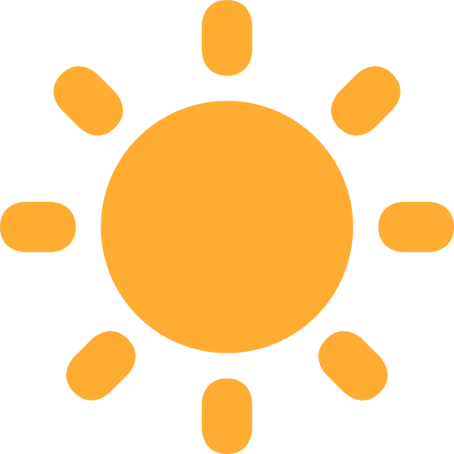
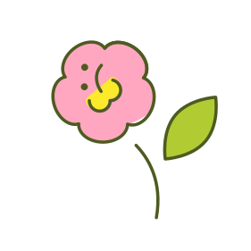
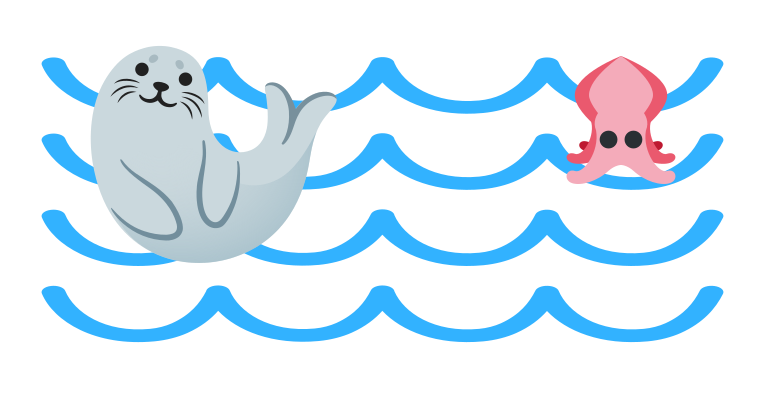
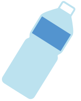
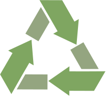

Просветительский проект, который помогает снизить порог входа в экологичный образ жизни. Мы объединяем разрозненную информацию о пунктах приема отходов и показываем реальную картину экологической ситуации простым и понятным языком.
60% отходов можно переработать


8 млн тонн пластика попадает в океан ежегодно
90% людей дышат загрязнённым воздухом




тонн пластика попадает в океан каждый год

Это как грузовик с мусором, высыпающийся в воду каждую минуту.
разлагается пластиковая бутылка

Она будет существовать дольше, чем вы, ваши дети и правнуки.

60%отходов можно переработать во вторсырьё
Но сегодня перерабатывается лишь малая часть — начните с раздельного сбора.
разлагается стекло в природе
Оно не наносит химического вреда, но занимает место на свалках – сдавайте его в переработку.
преждевременных смертей в год из-за загрязнения воздуха
Совокупное воздействие загрязнения окружающего воздуха и воздуха внутри жилых помещений является фактором преждевременной смерти.